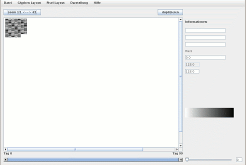

Den Hauptbereich des Fensters macht die eigentliche Visualisierungsfläche aus. In diesem Bereich werden die Glyphen dargestellt. Sie können hier auch direkt mit der Software interagieren. Rechts sehen Sie zudem in den Textfeldern Informationen, falls sich der Mauszeiger über einem Datenwert befindet. Darunter finden Sie zwei Felder, welche den höchsten Kollaborationswert und den aktuellen Referenzwert anzeigen.

In der eigentlichen Visualisierungsfläche besitzen Sie folgende Interaktionsmöglichkeiten:Weitere Interaktionsmöglichkeiten
Button 'Zoom': Der Zoom-Button wechselt zwischen einer 1:1 Darstellung und einer vierfachen Vergrößerung. So können Sie schnell zwischen einer 'normalen' Ansicht und einer starken Vergrößerung wählen.
Button 'Duplizieren': Ein Druck auf diesen Button öffnet ein neues Fenster, welches dieselben Daten enthält wie das aktuelle und zudem auch dieselben Darstellungsoptionen. Der Sinn besteht darin, die Auswirkungen unterschiedlicher Einstellungen (z.B. bei den Farben) anhand eines Datensatzes direkt miteinander vergleichen zu können.
Referenzwert: In dem interaktiven Textfeld rechts könnnn Sie einen neuen Referenzwert eingeben. Diesem Wert wird die höchstmögliche Farbe zugewiesen. Damit hat er wesentlichen Einfluss auf die Farbskala. Sie können so zwei unterschiedliche Wikis besser miteinander vergleichen: Besitzt bspw. eines den Höchstwert 15, eines den Höchstwert 35, so bewirkt eine Veränderung des niedrigeren Wertes auf 35, dass beide Wikis dieselbe Farbskala benutzen können.
Scrollbar am unteren Bildschirmende: dieser Balken zeigt an, welcher Zeitraum gegenwärtig dargestellt wird. Sie können den Balken beliebig verkleinern, vergrößern und verschieben. Der Effekt einer Verkleinerung ist derselbe, wie wenn Sie zwei entsprechende Pixel direkt auswählen.
Kleiner Slider unten rechts: Hier haben Sie die Möglichkeit, die Daten zu glätten. Es handelt sich dabei um ein lineares gleitendes Fenster. Das kleine Feld rechts daneben zeigt die Größe des Fensters in beide Richtungen: Ein Wert von 3 bedeutet, dass das Fenster nach links und rechts je die Ausdehnung drei besitzt.